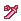
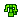

远古的巨龙骨 | 怪物猎人双十字
远古的巨龙骨 - 【MHXX】怪物猎人双十字
| 名称 | 远古的巨龙骨 (XX) 远古的色ょりゅうこつ |
||||
|---|---|---|---|---|---|
| 稀有度度 | 8 | 所持 | 99 | 売値 | |
| 素材 | 評価値 | 5 | |||
| 説明 | 太古にこ的地を支配していた未知之る古龙的希代的骨。不思議之力を秘めている。 | ||||
| [入手] ふらっ与 猎人 |
[ふら] 【G级】旧沙漠 1个 8% |
| [入手] 随从猫任务 区域报酬 |
[モン] 【G级】随从猫任务-沙漠-骨 通常 [モン] 【G级】随从猫任务-沙漠-骨 稀有度 [モン] 【G级】随从猫任务-沙漠-骨 稀有度 [モン] 【G级】随从猫任务-寒冷-骨 稀有度 |
| [入手] 地图 |
[G级★旧沙漠] 2-5 采取 4-6回 5% [G级★旧沙漠] 3-7 采取 変 稀有度 3-4回 30% [G级★旧沙漠] 5-5 采取 変 稀有度 4-6回 30% [G级★旧沙漠] 9-6 采取 変 稀有度 3-4回 30% [G级★原生林] 6-5 采取 変 稀有度 2-4回 20% [G级★原生林] 8-4 采取 変 稀有度 2-4回 20% [G级★原生林] 8-5 采取 変 稀有度 3-4回 20% [G级★原生林] 9-5 采取 変 稀有度 3-5回 20% [G级★冰海] 6-3 采取 変 稀有度 3-5回 25% [G级★冰海] 7-3 采取 3-4回 10% [G级★冰海] 9-4 采取 変 稀有度 4-5回 25% [G级★冰海] 秘境-2 采取 2-3回 25% [G级★遗群岭] 3-4 采取 3-5回 10% [G级★遗群岭] 5-3 采取 3-5回 10% [G级★遗群岭] 9-3 采取 3-5回 10% [G级★塔之秘境] 1-1 采取 4-6回 20% |
| [入手] 任务报酬 |
[副任务] G★1沙子中的惊喜 6% [主任务] G★2影蜘蛛的生态研究 3% [主任务] G★2原生林的毒色侵染 6% [主任务] G★2原生林小桃毛兽战線 6% [副任务] G★3原生林的恐怖体验 6% |
| [入手] 调合 |
[调合178] 远古的巨龙骨 × 增殖铁镐 2个 100% |
| [用途] 武器 |
 火山爆发巨剑7 [强化] 5个 火山爆发巨剑7 [强化] 5个  长者石板4 [强化] 2个 长者石板4 [强化] 2个  风化大剑6 [强化] 2个 风化大剑6 [强化] 2个  大骨7 [强化] 2个 大骨7 [强化] 2个  灾祸镰达尔乌那乌斯7 [强化] 3个 灾祸镰达尔乌那乌斯7 [强化] 3个  风化太刀6 [强化] 2个 ライトニングベイン6 [强化] 3个 クラニウムラス7 [强化] 5个 ライトニングベイン6 [强化] 3个 クラニウムラス7 [强化] 5个  大师剑刃6 [强化] 3个 封龙剑【怨绝一门】4 [强化] 2个 大师剑刃6 [强化] 3个 封龙剑【怨绝一门】4 [强化] 2个 风化片手剑6 [强化] 2个  炎刃火焰牢笼7 [强化] 4个 炎刃火焰牢笼7 [强化] 4个  风翔石像鬼的雄飞5 [强化] 2个 双曲蝶剑6 [强化] 5个 传说双刃5 [强化] 3个 风翔石像鬼的雄飞5 [强化] 2个 双曲蝶剑6 [强化] 5个 传说双刃5 [强化] 3个  风化的双剑6 [强化] 2个 风化的双剑6 [强化] 2个  大锤【碎颅】8 [强化] 4个 大锤【碎颅】8 [强化] 4个  巨型岩骨锤9 [强化] 5个 G雷皇锤7 [强化] 5个 巨型岩骨锤9 [强化] 5个 G雷皇锤7 [强化] 5个  灾祸锤厄运之始6 [强化] 3个 灾祸锤厄运之始6 [强化] 3个  百锻千炼・大殴5 [强化] 7个 熔岩・核心4 [强化] 2个 百锻千炼・大殴5 [强化] 7个 熔岩・核心4 [强化] 2个  风化的大锤6 [强化] 2个 风化的大锤6 [强化] 2个  リモカリーナ【鸣】6 [强化] 2个 ハード骨制ホルン9 [强化] 3个 リモカリーナ【鸣】6 [强化] 2个 ハード骨制ホルン9 [强化] 3个  风化狩猎笛6 [强化] 2个 风化狩猎笛6 [强化] 2个  重型硬骨枪11 [强化] 3个 重型硬骨枪11 [强化] 3个  命运之冠5 [生产] 2个 命运之冠7 [强化] 5个 原始长矛5 [强化] 1个 命运之冠5 [生产] 2个 命运之冠7 [强化] 5个 原始长矛5 [强化] 1个  进阶英勇长枪4 [强化] 2个 进阶英勇长枪4 [强化] 2个 风化枪6 [强化] 2个  炎帝石像鬼咆哮5 [强化] 2个 炎帝石像鬼咆哮5 [强化] 2个  大师铳枪4 [强化] 3个 大师铳枪4 [强化] 3个  风化铳枪6 [强化] 2个 风化铳枪6 [强化] 2个  银火龙摇晃イカー7 [强化] 5个 银火龙摇晃イカー7 [强化] 5个  灾祸夺命铁镰6 [强化] 3个 灾祸夺命铁镰6 [强化] 3个  风化的斩击斧6 [强化] 2个 风化的斩击斧6 [强化] 2个  骨粒之盾10 [强化] 2个 骨粒之盾10 [强化] 2个 雾幻石像鬼之蛰伏5 [强化] 2个  钳刃斧5 [强化] 5个 钳刃斧5 [强化] 5个 大师武装4 [强化] 3个 风化盾斧6 [强化] 2个  灾祸棍达尔克摩尔斯7 [强化] 3个 灾祸棍达尔克摩尔斯7 [强化] 3个  斗弓果敢4 [强化] 3个 勇猛与光明之凄烈弓5 [强化] 3个 斗弓果敢4 [强化] 3个 勇猛与光明之凄烈弓5 [强化] 3个  神弓阿姆尼斯5 [强化] 3个 风化的弓6 [强化] 2个 神弓阿姆尼斯5 [强化] 3个 风化的弓6 [强化] 2个  刺杀节拍5 [强化] 2个 大鬼岛7 [强化] 2个 刺杀节拍5 [强化] 2个 大鬼岛7 [强化] 2个  大神岛【出云】4 [强化] 5个 大神岛【出云】4 [强化] 5个  炎妃石像鬼之嚎叫5 [强化] 2个 炎妃石像鬼之嚎叫5 [强化] 2个  流星重击炮4 [强化] 5个 大师猎弩4 [强化] 3个 大师猎弩4 [强化] 3个 |
| [用途] 防具生产 |
 远古龙Ｘ头盔 [生产] 3个 远古龙Ｘ头盔 [生产] 3个  大师Ｘ耳坠 [生产] 3个 黑Ｘ头盔 [生产] 4个 大师Ｘ耳坠 [生产] 3个 黑Ｘ头盔 [生产] 4个  远古龙Ｘ铠甲 [生产] 3个 远古龙Ｘ铠甲 [生产] 3个  大师Ｘ铠甲 [生产] 3个 黑Ｘ黑之身 [生产] 4个 大师Ｘ铠甲 [生产] 3个 黑Ｘ黑之身 [生产] 4个  远古龙Ｘ腕甲 [生产] 3个 远古龙Ｘ腕甲 [生产] 3个  大师Ｘ腕甲 [生产] 3个 黑Ｘ黑之爪 [生产] 4个 大师Ｘ腕甲 [生产] 3个 黑Ｘ黑之爪 [生产] 4个  远古龙Ｘ腰甲 [生产] 3个 远古龙Ｘ腰甲 [生产] 3个  大师Ｘ腰甲 [生产] 3个 黑Ｘ黑之腰 [生产] 4个 大师Ｘ腰甲 [生产] 3个 黑Ｘ黑之腰 [生产] 4个  远古龙Ｘ重靴 [生产] 3个 远古龙Ｘ重靴 [生产] 3个  大师Ｘ重靴 [生产] 3个 黑Ｘ之足 [生产] 4个 大师Ｘ重靴 [生产] 3个 黑Ｘ之足 [生产] 4个 |
| [用途] 防具强化 |
 大师系列 Lv8 [强化] 1个 大师系列 Lv8 [强化] 1个 |
| [用途] 装饰品 |
龙气珠【1】 [生产] 2个 |
| [用途] 调合 |
[调合178] 远古的巨龙骨 × 增殖铁镐 = 远古的巨龙骨 2个 100% |